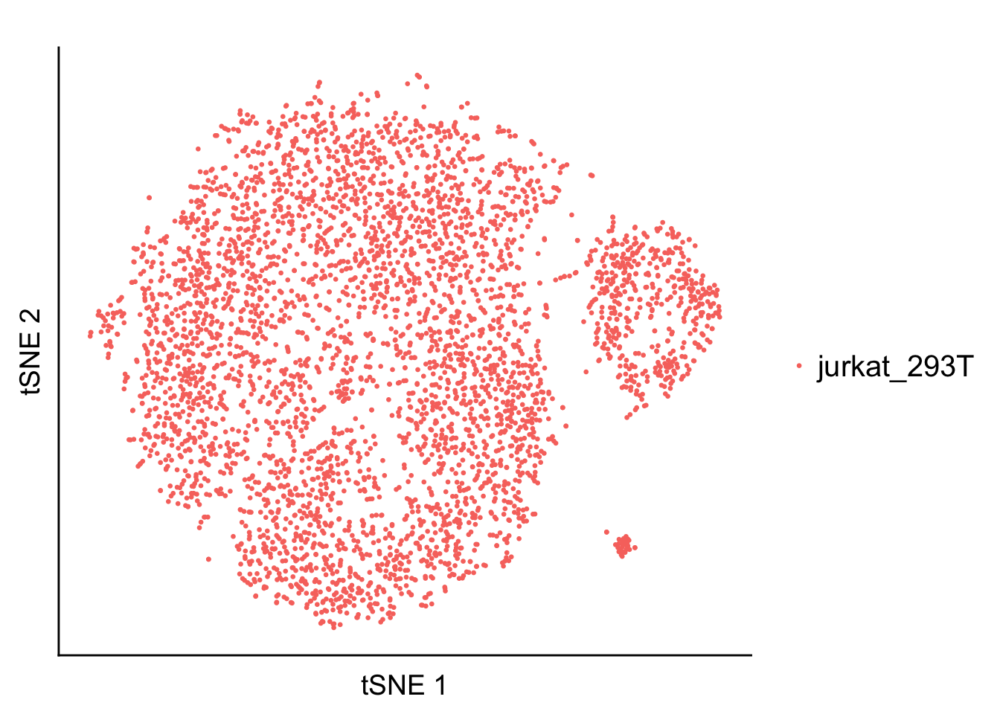
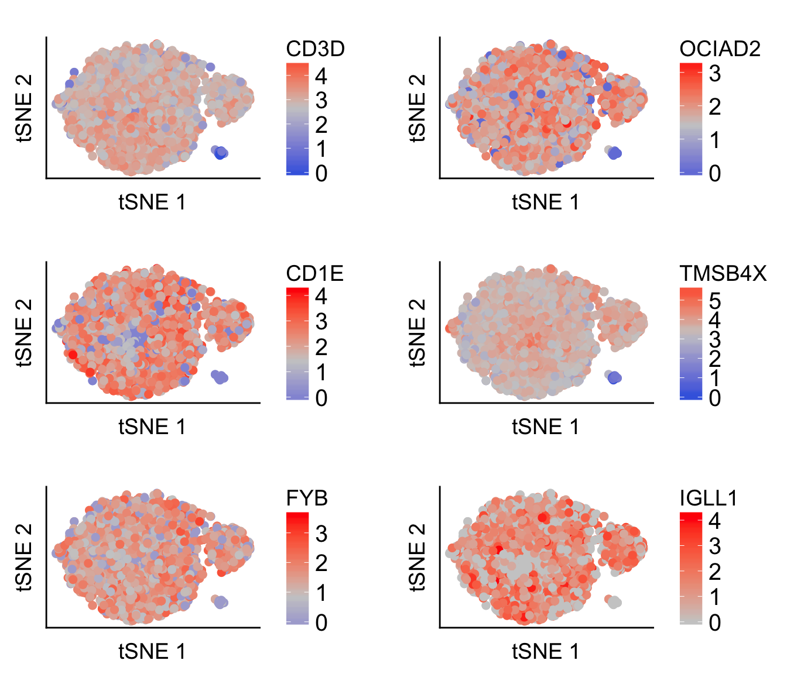
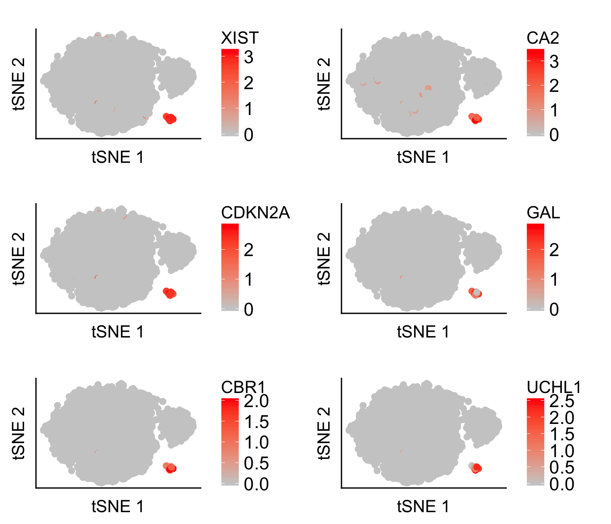
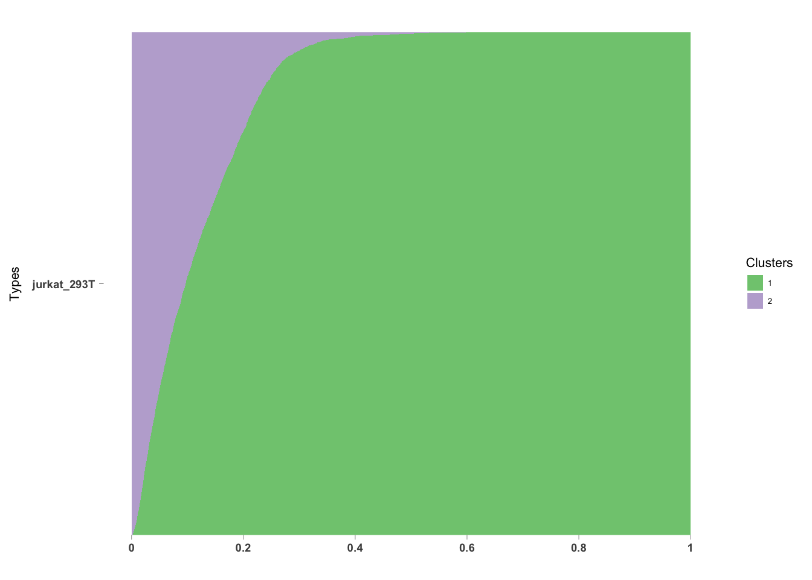
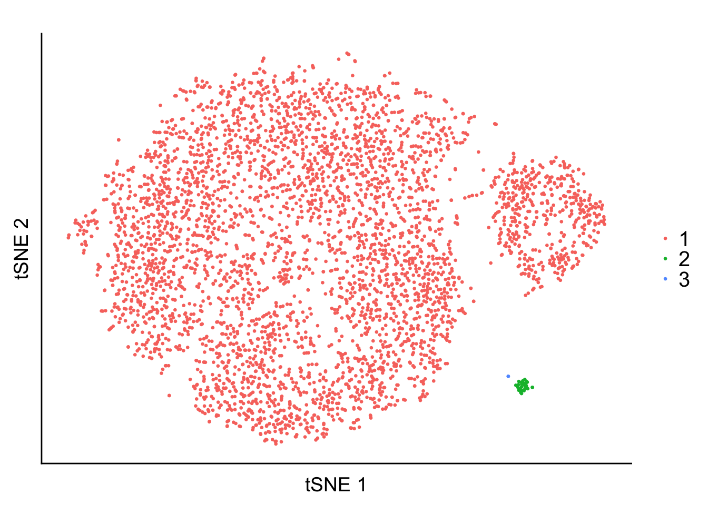
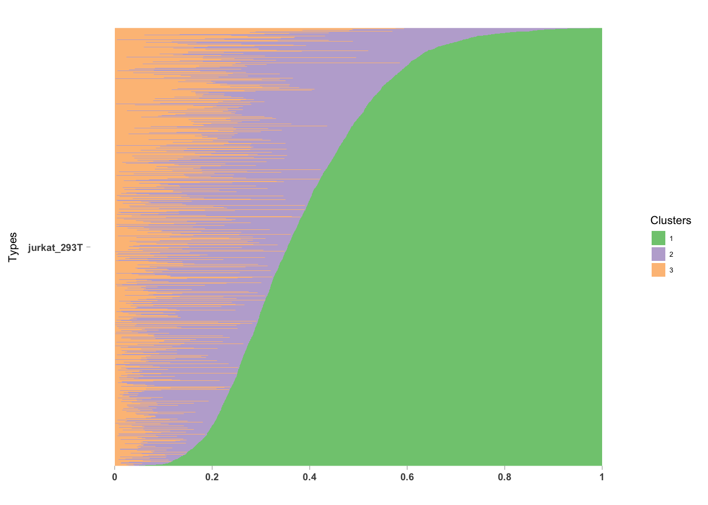
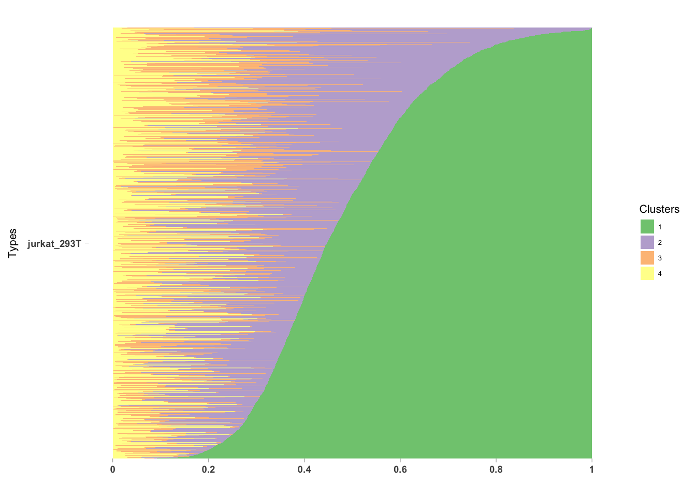
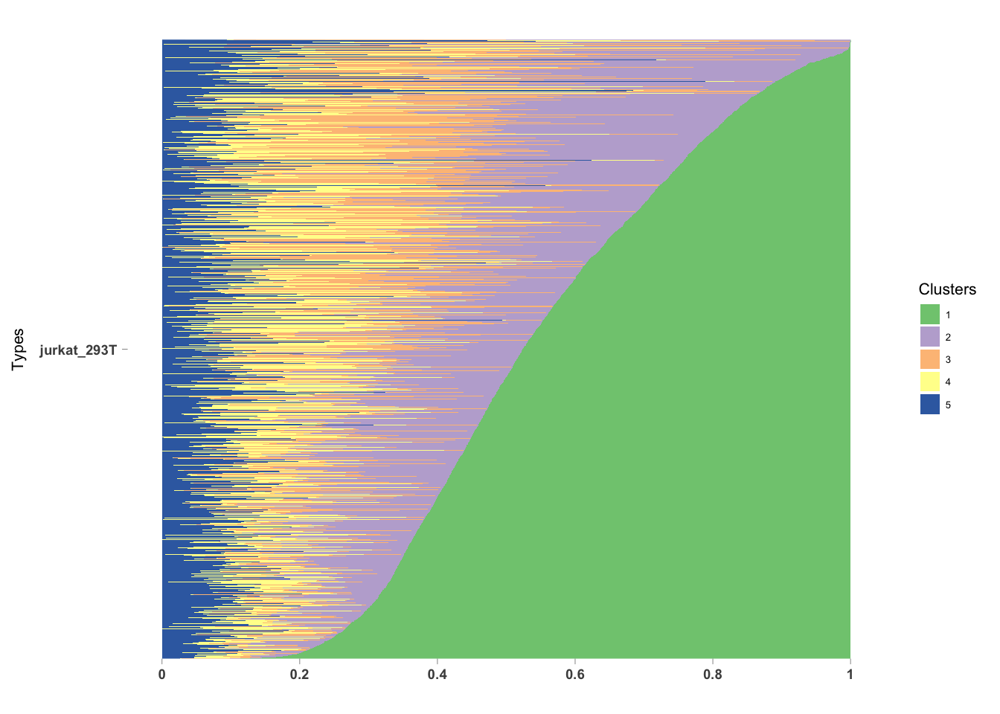
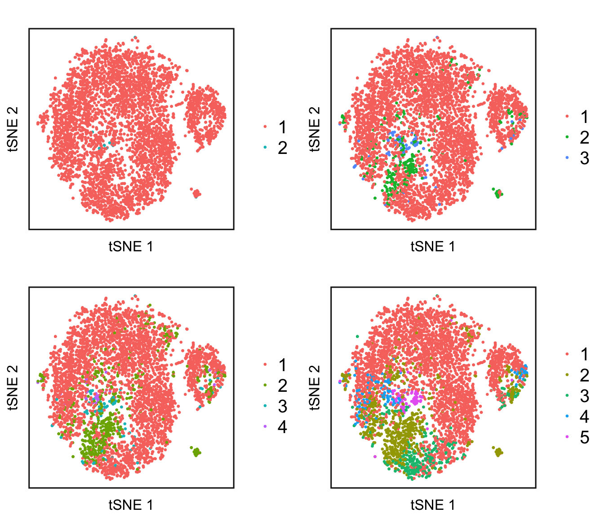

We take a mixture of \(99\%\) mixture of Jurkat cells and \(1\%\) 293T cells. We aim to perform unsupervised Countclust clustering of the cells to see if the clusters picked up in an unsupervised way correspond to the Jurkat cells and 293T cells.
library(cellrangerRkit)library(CountClust)
library(maptpx)
library(ggplot2)
library(MAST)
library(GSEABase)
library(Seurat)
library(classtpx)data <- Read10X("../data/jurkat_293T_99_1/filtered_matrices_mex/hg19/")The dimensionality of the matrix loaded
dim(data)## [1] 32738 4185We first remove all the ribosomal, mitochondrial, small RNA genes reported in the above data matrix.
We report the sample names
colnames(data)[1:10]## [1] "AAACATACGCTGTA" "AAACATACTCAGGT" "AAACATTGGCTTCC" "AAACCGTGACCTAG"
## [5] "AAACGCACCGGGAA" "AAACGCACCTAGTG" "AAACGCTGCACTCC" "AAACGCTGCCCACT"
## [9] "AAACGCTGGACAGG" "AAACGCTGGAGACG"We report the names of the genes
rownames(data)[1:10]## [1] "MIR1302-10" "FAM138A" "OR4F5" "RP11-34P13.7"
## [5] "RP11-34P13.8" "AL627309.1" "RP11-34P13.14" "RP11-34P13.9"
## [9] "AP006222.2" "RP4-669L17.10"idx2 <- which(!is.na(match(substring(rownames(data), 1, 2), c("RP", "MT", "RN"))))data2 <- data[-idx2, ]Remove data from multiple gene mapping and small RNA.
idx3 <- grep("[.]", rownames(data2))
idx4 <- grep("[-]", rownames(data2))data3 <- data2[-union(idx3, idx4), ]We now create a Seurat object using this data matrix.
 ## Jurkat + 293T sorted Data processing
We load the Jurkat cells data.
jurkat_data <- Read10X("../data/jurkat/filtered_matrices_mex/hg19/")
dim(jurkat_data)## [1] 32738 3258t_data <- Read10X("../data/293T/filtered_matrices_mex/hg19/")
dim(t_data)## [1] 32738 2885intersected_genes <- intersect(rownames(data3), intersect(rownames(jurkat_data), rownames(t_data)))data3_filt <- data3[match(intersected_genes, rownames(data3)), ]
jurkat_data_filt <- jurkat_data[match(intersected_genes, rownames(jurkat_data)),]
t_data_filt <- t_data[match(intersected_genes, rownames(t_data)),]dim(jurkat_data_filt)## [1] 19559 3258dim(t_data_filt)## [1] 19559 2885dim(data3_filt)## [1] 19559 4185pooled_data <- rbind(t(jurkat_data_filt), t(t_data_filt), t(data3_filt))class_labs <- c(rep("jurkat", dim(jurkat_data_filt)[2]), rep("293T", dim(t_data_filt)[2]))
class_labs_2 <- factor(as.vector(mapvalues(class_labs, from = unique(class_labs), to = 1:length(unique(class_labs)))))
known_indices <- 1:(dim(jurkat_data_filt)[2]+dim(t_data_filt)[2])topic_clus <- get(load("../output/classtpx_jurkat_293T_99_1.rda"))labels2 <- as.factor(apply(topic_clus$omega, 1, function(x) return(which.max(x))))
#labels2_class <- unique(class_labs)[labels2]
data_ggplot <- data.frame(labels2 = labels2[-known_indices],
tSNE_1 = seuratObj_TFH_global@tsne.rot[, 1],
tSNE_2 = seuratObj_TFH_global@tsne.rot[, 2])
plot1 <- ggplot(data_ggplot) + theme(panel.background = element_rect(colour = "black", size = 1),
panel.grid.major = element_blank(),
panel.grid.minor = element_blank(),
axis.text.y = element_blank(),
axis.text.x = element_blank(),
axis.ticks = element_blank(),
legend.text = element_text(size = 15)) + geom_point(aes(x = tSNE_1, y = tSNE_2, color = labels2), size = 0.5) + labs(x = 'tSNE 1', y = 'tSNE 2', title = '') + scale_color_discrete('')
plot1## Finished
## Pass returnall=TRUE to return lists of duplicate or missing query terms.## symbol name
## 1 CD3D CD3d molecule
## 2 CD1E CD1e molecule
## 3 TMSB4X thymosin beta 4, X-linked
## 4 IGLL1 immunoglobulin lambda like polypeptide 1
## 5 CD3E CD3e molecule
## 6 ARHGDIB Rho GDP dissociation inhibitor beta
## 7 AIF1 allograft inflammatory factor 1
## 8 MGMT O-6-methylguanine-DNA methyltransferase
## 9 SH2D1A SH2 domain containing 1A
## 10 CHI3L2 chitinase 3 like 2
## 11 IL2RG interleukin 2 receptor subunit gamma
## 12 CTSG cathepsin G
## 13 IFI16 interferon gamma inducible protein 16
## 14 ARPP21 cAMP regulated phosphoprotein 21
## 15 SPN sialophorin## Finished## symbol name
## 1 XIST X inactive specific transcript (non-protein coding)
## 2 CA2 carbonic anhydrase 2
## 3 CDKN2A cyclin dependent kinase inhibitor 2A
## 4 GAL galanin and GMAP prepropeptide
## 5 CBR1 carbonyl reductase 1
## 6 UCHL1 ubiquitin C-terminal hydrolase L1
## 7 CKB creatine kinase B
## 8 RAB13 RAB13, member RAS oncogene family
## 9 PLS3 plastin 3
## 10 CDC42EP1 CDC42 effector protein 1
## 11 HOXA10 homeobox A10
## 12 KRT18 keratin 18
## 13 HOXA9 homeobox A9
## 14 CAMK1 calcium/calmodulin dependent protein kinase I
## 15 MLF1 myeloid leukemia factor 1
## 16 TSPAN6 tetraspanin 6

We now compare this with the SVM based classification results.
genes1 <- seuratObj_TFH_global@var.genessvm_data <- pooled_data[, match(genes1, colnames(pooled_data))]train_data <- as.matrix(svm_data[known_indices,])
test_data <- as.matrix(svm_data[-known_indices,])
y <- class_labs_2
dat <- cbind.data.frame(y, train_data);## Warning in data.row.names(row.names, rowsi, i): some row.names duplicated:
## 3828,3862,4366,4846,5591,5946,6119 --> row.names NOT usedsvm.control.default <- list(scale = TRUE, type = NULL, kernel ="radial",
degree = 3,
coef0 = 0, cost = 1, nu = 0.5,
class.weights = NULL, cachesize = 40, tolerance = 0.001,
epsilon = 0.1,
shrinking = TRUE, cross = 0, fitted = TRUE)
svm.control <- list()
svm.control <- modifyList(svm.control.default, svm.control)
model_SVM <- do.call(e1071::svm, append(list(formula = y ~ .,
data=dat,
probability=TRUE), svm.control))
prob = predict(model_SVM, test_data, probability=TRUE)
table(prob)## prob
## 1 2
## 4157 28prob_mat <- as.matrix(attr(prob, "probabilities"))
labels3 <- as.factor(apply(prob_mat, 1, function(x) return(which.max(x))))
#labels2_class <- unique(class_labs)[labels2]
data_ggplot <- data.frame(labels3 = labels3,
tSNE_1 = seuratObj_TFH_global@tsne.rot[, 1],
tSNE_2 = seuratObj_TFH_global@tsne.rot[, 2])
plot1 <- ggplot(data_ggplot) + theme(panel.background = element_rect(colour = "black", size = 1),
panel.grid.major = element_blank(),
panel.grid.minor = element_blank(),
axis.text.y = element_blank(),
axis.text.x = element_blank(),
axis.ticks = element_blank(),
legend.text = element_text(size = 15)) + geom_point(aes(x = tSNE_1, y = tSNE_2, color = labels3), size = 0.5) + labs(x = 'tSNE 1', y = 'tSNE 2', title = '') + scale_color_discrete('')
plot1prob_mat <- as.matrix(attr(prob, "probabilities"))
#labels3 <- as.factor(apply(prob_mat, 1, function(x) return(which.max(x))))
#labels2_class <- unique(class_labs)[labels2]
labels3 <- as.factor(apply(prob_mat, 1, function(x)
{
if(max(x) > 0.7){
return(which.max(x))
}else{
return(dim(prob_mat)[2]+1)
}}))
data_ggplot <- data.frame(labels3 = labels3,
tSNE_1 = seuratObj_TFH_global@tsne.rot[, 1],
tSNE_2 = seuratObj_TFH_global@tsne.rot[, 2])
plot1 <- ggplot(data_ggplot) + theme(panel.background = element_rect(colour = "black", size = 1),
panel.grid.major = element_blank(),
panel.grid.minor = element_blank(),
axis.text.y = element_blank(),
axis.text.x = element_blank(),
axis.ticks = element_blank(),
legend.text = element_text(size = 15)) + geom_point(aes(x = tSNE_1, y = tSNE_2, color = labels3), size = 0.5) + labs(x = 'tSNE 1', y = 'tSNE 2', title = '') + scale_color_discrete('')
plot1##
## Estimating on a 10328 document collection.
## start the fit
## log posterior increase: 1463.137, done.labels2 <- as.factor(apply(topic_clus$omega, 1, function(x) return(which.max(x))))
#labels2_class <- unique(class_labs)[labels2]
data_ggplot <- data.frame(labels2 = labels2[-known_indices],
tSNE_1 = seuratObj_TFH_global@tsne.rot[, 1],
tSNE_2 = seuratObj_TFH_global@tsne.rot[, 2])
plot1 <- ggplot(data_ggplot) + theme(panel.background = element_rect(colour = "black", size = 1),
panel.grid.major = element_blank(),
panel.grid.minor = element_blank(),
axis.text.y = element_blank(),
axis.text.x = element_blank(),
axis.ticks = element_blank(),
legend.text = element_text(size = 15)) + geom_point(aes(x = tSNE_1, y = tSNE_2, color = labels2), size = 0.5) + labs(x = 'tSNE 1', y = 'tSNE 2', title = '') + scale_color_discrete('')
plot1
labels2 <- as.factor(apply(topic_clus$omega, 1, function(x)
{
if(max(x) > 0.7){
return(which.max(x))
}else{
return(dim(topic_clus$omega)[2]+1)
}}))
#labels2_class <- unique(class_labs)[labels2]
data_ggplot <- data.frame(labels2 = labels2[-known_indices],
tSNE_1 = seuratObj_TFH_global@tsne.rot[, 1],
tSNE_2 = seuratObj_TFH_global@tsne.rot[, 2])
plot1 <- ggplot(data_ggplot) + theme(panel.background = element_rect(colour = "black", size = 1),
panel.grid.major = element_blank(),
panel.grid.minor = element_blank(),
axis.text.y = element_blank(),
axis.text.x = element_blank(),
axis.ticks = element_blank(),
legend.text = element_text(size = 15)) + geom_point(aes(x = tSNE_1, y = tSNE_2, color = labels2), size = 0.5) + labs(x = 'tSNE 1', y = 'tSNE 2', title = '') + scale_color_discrete('')
plot1
topic_clus_list <- get(load("../output/maptpx_jurkat_293T_99_1.rda"))PlotCountClust <- function(topic_clus, fac){
omega <- topic_clus$omega
theta <- topic_clus$theta
annotation <- data.frame(
sample_id = paste0("X", 1:length(fac)),
tissue_label = factor(fac,
levels = rev(unique(fac) ) ) );
rownames(omega) <- annotation$sample_id;
StructureGGplot(omega = omega,
annotation = annotation,
palette = RColorBrewer::brewer.pal(8, "Accent"),
yaxis_label = "Types",
order_sample = TRUE,
axis_tick = list(axis_ticks_length = .1,
axis_ticks_lwd_y = .1,
axis_ticks_lwd_x = .1,
axis_label_size = 7,
axis_label_face = "bold"))
}PlotCountClust(topic_clus_list[[2]], fac)PlotCountClust(topic_clus_list[[3]], fac)
PlotCountClust(topic_clus_list[[4]], fac)
PlotCountClust(topic_clus_list[[5]], fac)

This R Markdown site was created with workflowr